“Les nuages ne sont pas des sphères, les montagnes ne sont pas des cônes, les rivages ne sont pas des arcs de cercle, l'écorce d'un arbre n'est pas lisse et l'éclair ne trace pas de ligne droite. La nature est complexe et la géométrie fractale rend compte de cette complexité et permet de l'étudier.” — Benoît Mandelbrot
Au X-ième siècle, apparaissent en mathématiques des objets pour le moins... étranges... Infiniment complexes, ils bouleversent la géométrie euclidienne en vigueur jusqu'à lors amenant progressivement au développement d'une nouvelle théorie géométrique, la géométrie fractale.
Le but de cet atelier est de présenter les principaux objets fractales rencontrés en mathématiques et de définir le plus clairement possible ce terme. Cette étude nous donnera l'occasion d'appréhender une nouvelle branche des mathématiques, l'analyse complexe.
En 1872, le mathématicien Allemand Karl Weierstrass présente à l'académie prussienne des sciences ce qui sera plus tard considéré comme le premier exemple de fractale. La fonction de Weiestrass se distingue en ceci qu'elle qu'elle est continue partout mais dérivables nul part.
Elle est définit comme suit : $$ f(x) = \sum_{n=1}^{+\infty} b^n \cos(a^nx\pi) $$
où $a$ est un entier impair, $b \in \left[0, 1\right[$ et $ab > 1 + \frac{3}{2} \pi$
Outre ces considérations purement analytiques, son graphe présente d'étranges propriétés géométriques.
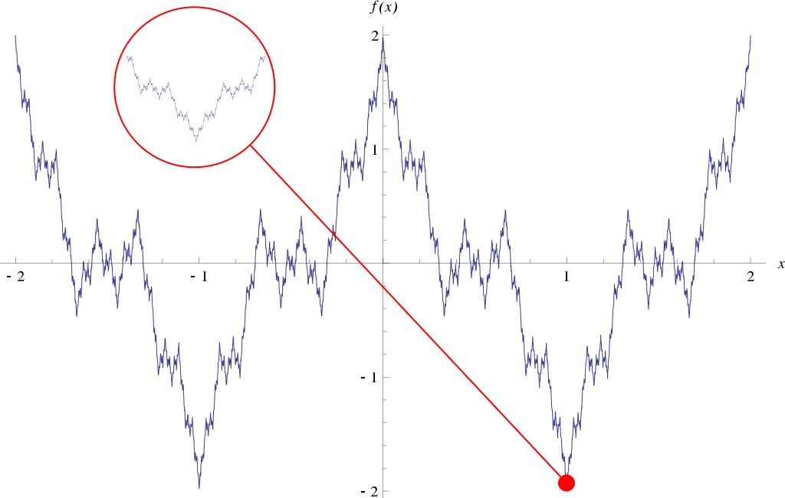
La fonction apparaît en effet infiniment détaillée et présente surtout une remarquable auto-similarité. Agrandir le graphe sur un point précis dévoile systématiquement une version plus petite du graphe global et ce à l'infini.
Moins d'une décennie plus tard, le mathématicien Allemand Georg Cantor présente une autre construction autrement plus simple mais aux propriétés similaires : les poussières de Cantor.
Considérons le segment $C_0 = [0,1]$.
À la première étape nous divisons notre segment en trois parties égales ($[0, \frac{1}{3}], [\frac{1}{3}, \frac{2}{3}], [\frac{2}{3}, 1]$) et supprimons la partie centrale. La figure ainsi obtenue correspond au segment $C_1 = [0, \frac{1}{3}] \cup [ \frac{2}{3}, 1]$
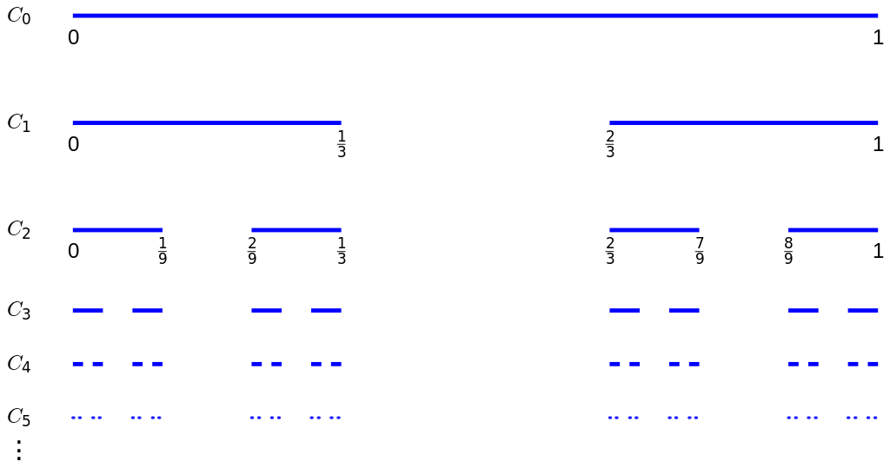
De façon similaire, à la deuxième étape, nous divisons chacun des segments obtenus en trois parties et retirons celles du milieu, pour finalement aboutir au segment $C_2$ à 4 morceaux.
De manière générale, pour passer du segment $C_k$ au segment $C_{k+1}$, nous divisions en $3$ les $2^k$ morceaux obtenus à l'étape $C_k$ et retirons les parties du milieu, obtenant ainsi $2^{k+1}$ morceaux.
Il s'agit là d'une construction dite "itérative" où le résultat de chaque étape sert de matériaux à l'étape suivante.
Les poussières de Cantor sont alors obtenues en réalisant cette procédure un nombre infini de fois ou, de manière plus formelle :
$$ C = \bigcap_{i=1}^{+\infty} C_i $$
Une nouvelle fois, l'ensemble de Cantor présente la propriété d'auto-similarité (ce qui apparaît d'ailleurs clairement dans sa définition).
Le mathématicien suédois Helge von Koch publie en 1904 ce qui sera appelé plus tard la courbe de Von Koch.
Cette fractale reprend la construction itérative des poussières de Cantor tout en présentant les propriétés de continuité et de non dérivabilité de la fonction de Weierstrass.
Partons d'un segment $V_0$ d'une unité de longueur.
Pour passer à l'étape suivante, nous découpons $V_0$ en trois parties, retirons la partie centrale et plaçons de part et d'autre du trou ainsi formé des segments de même longueurs que la partie retirée de sorte à former un triangle équilatéral. Nous obtenons alors $V_1$
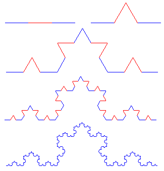
De la même manière, pour passer de l'étape $V_1$ à $V_2$, nous appliquons à chaque segment de $V_1$ cette même transformation.
De façon générale, en notant $f$ la fonction qui à une certaine étape associe l'étape suivante et en notant $f^k$ la composée k-ième de f, 2 la courbe de Von Koch V est :
$$V = \lim_{k \rightarrow +\infty} \left(f^k(V_0)\right)$$
À nouveau, et par construction, la courbe de Von Koch présente cette propriété d'auto-similarité.
Il est également possible de générer des fractales de façon aléatoire / stochastique. Ce type de modèle est en particulier utilisé dans la modélisation de phénomènes physiques où la "régularité" des méthodes précédentes ne permet pas de représenter correctement les réalités du monde réel.
L'une des fractales aléatoires les plus simples consiste en une généralisation d'une fractale déterministe, le "tapis de Sierpinski". Considérons un carré $C_0$ de côté $1$.
À la première étape, nous découpons $C_0$ en 9 sous-carrés égaux de côtés $\frac{1}{3}$. Nous fixons alors une probabilité $0 < p < 1$ et choisissons de supprimer chacun des sous-carrés selon cette probabilité. De la même manière, pour passer de $C_1$ à $C_2$, nous découpons chacun des sous-carrés restants en 9 parts égales et répétons pour chacun d'entre eux cette expérience aléatoire.
De manière générale, en notant $f$ la fonction permettant de passer de l'étape $C_k$ à l'étape $C_{k+1}$ , \textbf{un} tapis de Sierpinski associé à la probabilité $p$ correspond alors à :
$$ T = \lim_{n\to+\infty} f^k(C_0)$$
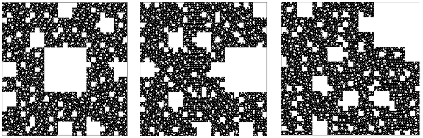
La notion de fractales aléatoires est par exemple particulièrement utile en informatique dans la génération de paysages aléatoires. Pensons par exemple au jeu vidéo minecraft dont la structure du monde peut s'apparenter à un objet fractale.
Avec tous ces exemples en tête, il est désormais possible d'approcher une définition du concept de "fractale" comme possédant une ou plusieurs des propriétés suivantes :
Par ailleurs, il est possible de distinguer dans ce large éventail d'objets mathématiques trois "catégories" générales de fractales :
Mais existe-t-il une définition plus générale du concept de fractales ?
Benoît Mandelbrot, pionnier de l'étude des fractales, a fournit une définition convenable et relativement générale du concept de fractale. Nous nous contenterons d'en esquisser les concepts mathématiques sous-jacents.
Nous pouvons parfaitement concevoir intuitivement le concept de dimension dans le cas d'espaces "simples". Une droite est de dimension 1, un plan de dimension 2, l'espace de dimension 3 etc. Elle peut être définit comme le nombre minimal de coordonnées nécessaires pour identifier un point de l'espace en question.
La dimension de Hausdorff-Besicovitch (ou dimension de Hausdorff) fournit une autre manière d'appréhender le concept de dimension d'un ensemble. Considérons un ensemble $U$ non vide 3. On note $|U|$ le diamètre de U définit comme : $$ |U| = \sup {|x-y| : x,y \in U} $$
i.e la borne supérieur des distances de deux élements de l'ensemble ou, de façon similaire, la plus grande distance séparant deux élements de l'ensemble. Il est alors possible de se demander : étant donné un certain ensemble $M$, combien de sous ensemble de diamètre au plus $\delta$ sont nécessaires pour couvrir entièrement $M$ ?
Pour $\delta > 0$, nous notons $N(\delta)$ ce nombre. Il est clair que $N(\delta)$ croît à mesure que $\delta$ décroît. Nous nous interessons alors au comportement de ce nombre lorsque $\delta$ tend vers $0$.
Dans le cas d'un segment de longueur 1, il est clair que : $$ N(\delta) = \frac{1}{\delta} $$
Dans le cas d'un segment de longueur 2, nous avons cette fois-ci : $$ N(\delta) = \frac{2}{\delta} $$
Lorsque l'on fait tendre $\delta$ vers 0, le $N(\delta)$ associé au segment de longueur 2 croît proportionnellement au $N(\delta)$ associé au segment de longueur $1$, en l'occurence $\frac{1}{\delta} = \delta^{-1}$.
La dimension de Hausdorff correspond alors précisément à l'exposant associé au $\delta$, qui semble se confondre, dans les cas simples et réguliers, avec la dimension "classique".
Elle mesure en réalité le niveau d'intrication de l'ensemble.
Les fractales sont alors caractérisées comme étant les ensemble dont la dimension de Hausdorff excède la dimension "classique". Le flocon de Von Koch, par exemple, possède une dimension de Hausdorff de $\frac{\ln(4)}{\ln(3)} \approx 1,26$, légèrement au dessus de la dimension 1 associée à une courbe. Dès lors, le flocon de Von Koch peut être considéré, selon la définition de Benoît Mandelbrot, comme une fractale.
Cette définition, en plus d'être délicate à manipuler, présente toutefois certaines limites. Définir le concept de fractale semble être une quête vaine, le paysage fractale étant bien trop large pour être rassemblé sous une unique propriété commune.4: La définition généralement admise est alors celle de la section précédente, définissant une fractale comme un ensemble respectant une ou plusieurs propriétés caractéristiques.
Les mathématiciens français Pierre Fatou et Gaston Julia développent au début du XXe siècle une nouvelle branche des mathématiques, la dynamique holomorphe, ouvrant la porte à de nouvelles constructions fractales, parmi lesquelles les ensemble de Julia et de Fatou.
Il s'agit de deux ensembles complémentaires définis dans un cadre très large que nous restreindront à un cas particulier.
Considérons la suite à valeurs complexes $(z_n)$ telle que $z_0 \in \mathbb{C}$ et $$z_{n+1} = z_n^2 + c$$ Pour $c\in\mathbb{C}$ fixé, les différentes valeurs de $z_0$ peuvent donner naissance soit à une suite bornée soit à une suite dont les termes tendent progressivement vers l'infini.
L'ensemble de Julia pour un certain $c\in\mathbb{Z}$ est alors définit comme la frontière de l'ensemble des $z_0 \in \mathbb{C}$ tels que la suite $(z_n)$ associée est bornée.
Il est alors possible de représenter cet ensemble dans le plan en coloriant d'une certaine couleur les points de l'ensemble, et d'une autre les points du complémentaire. Mieux encore, nous pouvons étudier la vitesse avec laquelle la suite diverge vers l'infini et colorier les points du complémentaire selon cette valeur.
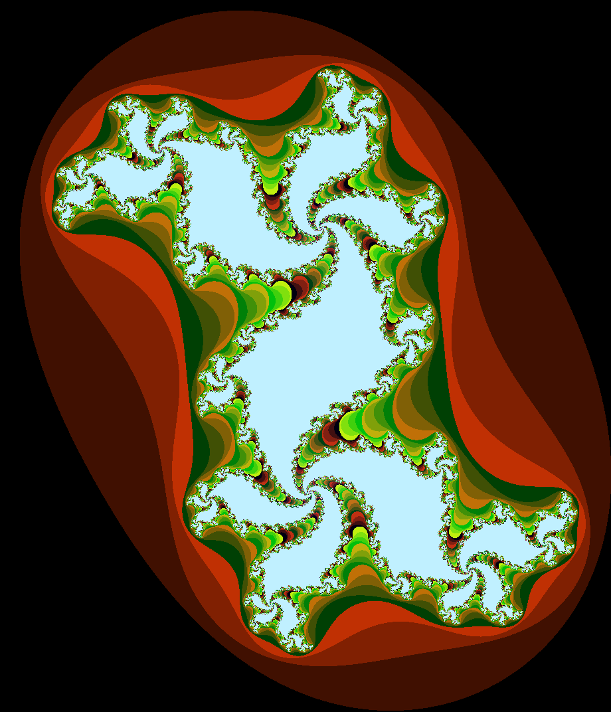 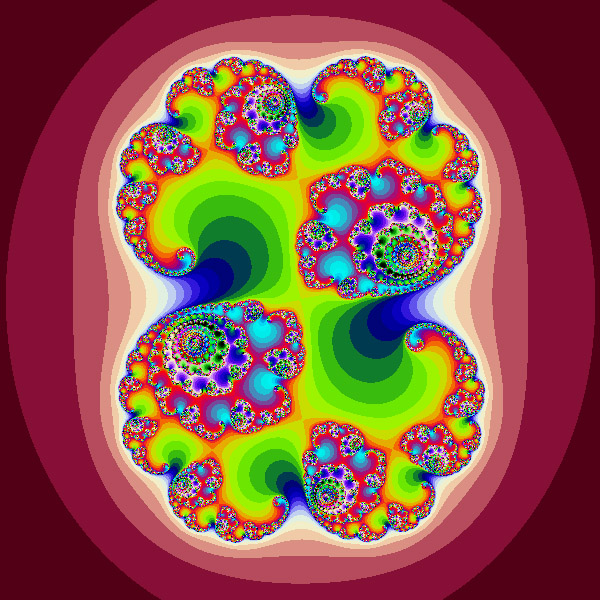 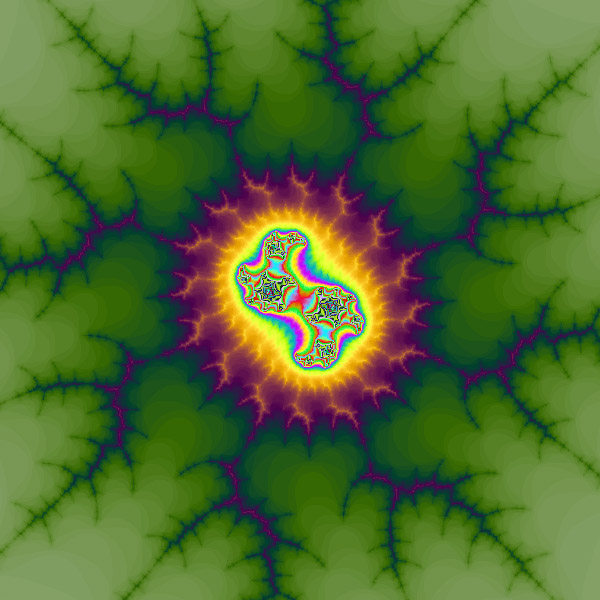 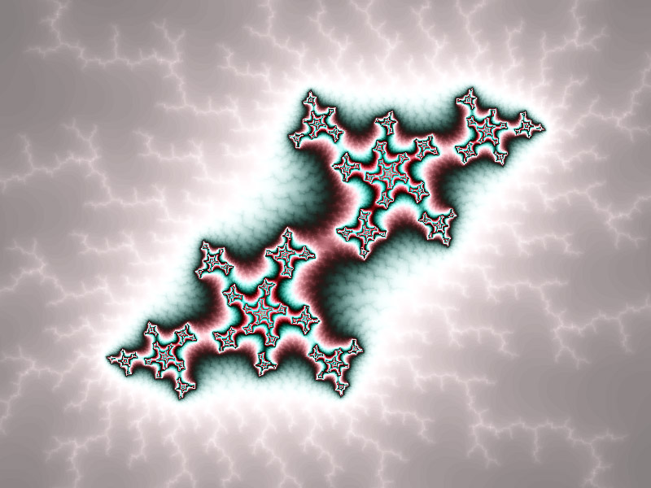 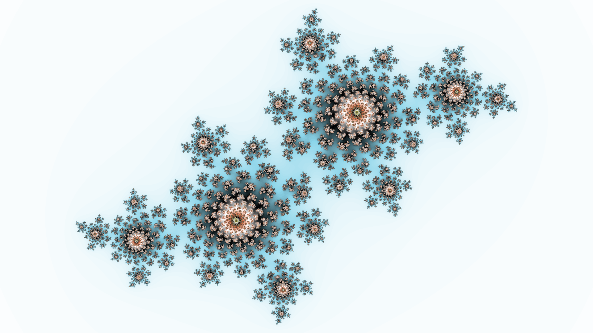 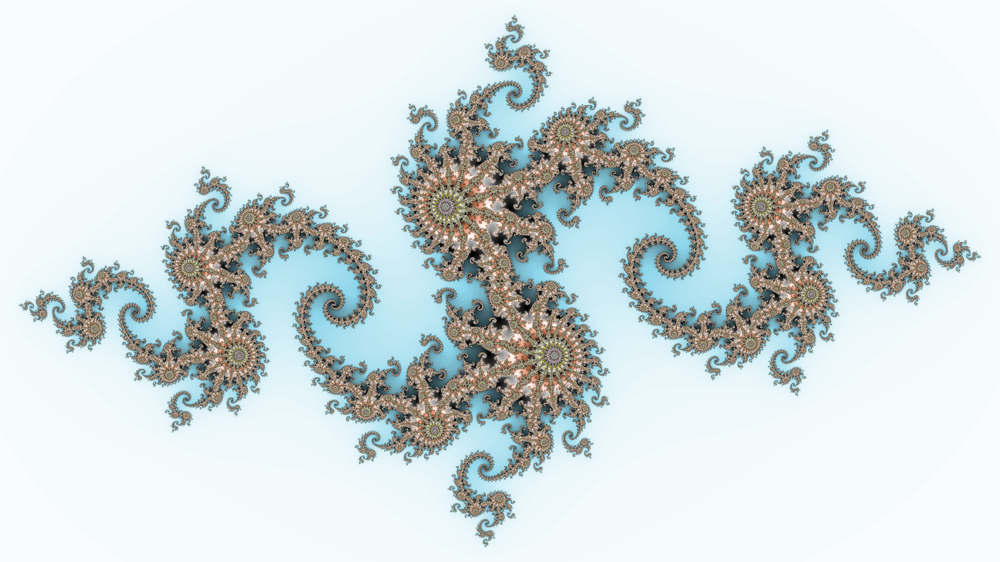 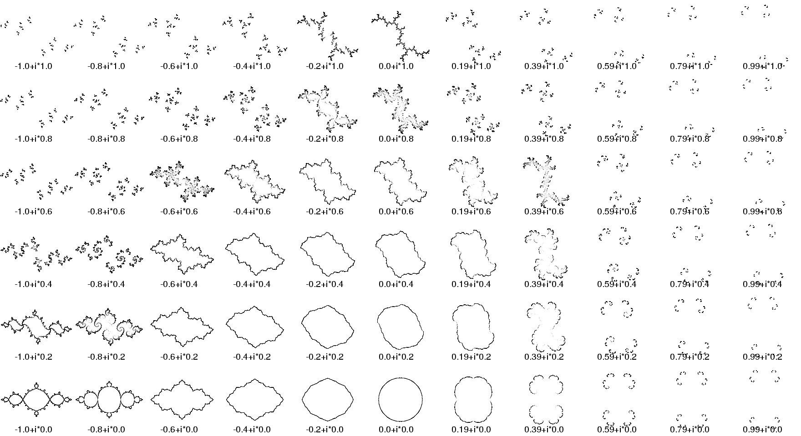
L'ensemble de Julia dépend de la valeur de $c$ choisie. Nous pourrions dès lors imaginer faire varier ce paramètre, obtenant ainsi un "film", dont chaque image représente un ensemble de julia pour un certain paramètre $c\in\mathbb{C}$.
L'ensemble de Julia est une fractale, en ce sens qu'elle présente une structure infiniment détaillée (sans pour autant être auto-similaire).
De la notion d'ensemble de Julia naît celle d'ensemble de Mandelbrot, du nom du mathématicien polono-franco-américain Benoît Mandelbrot.
Plutôt que d'observer le comportement de $(z_n)$ lorsque l'on fait varier $z_0$, on se propose ici de fixer $z_0 = 0$ et de faire varier le paramètre $c$. De la même manière que précédemment, l'ensemble de Mandelbrot peut alors être définit comme l'ensemble de toutes les valeurs de $c$ pour lesquelles la suite $z_n$ est bornée, en posant $z_0 = 0$.
Dans ce contexte, chaque point du plan complexe est associé à une fractale de Julia. En particulier, il est possible de démontrer qu'un point $z\in\mathbb{C}$ appartient à l'ensemble de Mandelbrot si et seulement si la fractale de Julia associée est connexe, i.e d'un seul morceau.
À nouveau, il est possible de tracer l'ensemble de Mandelbrot dans le plan, en faisant varier les couleurs des points du complémentaire suivant leur vitesse de divergence. (explorer l'ensemble de mandelbrot)
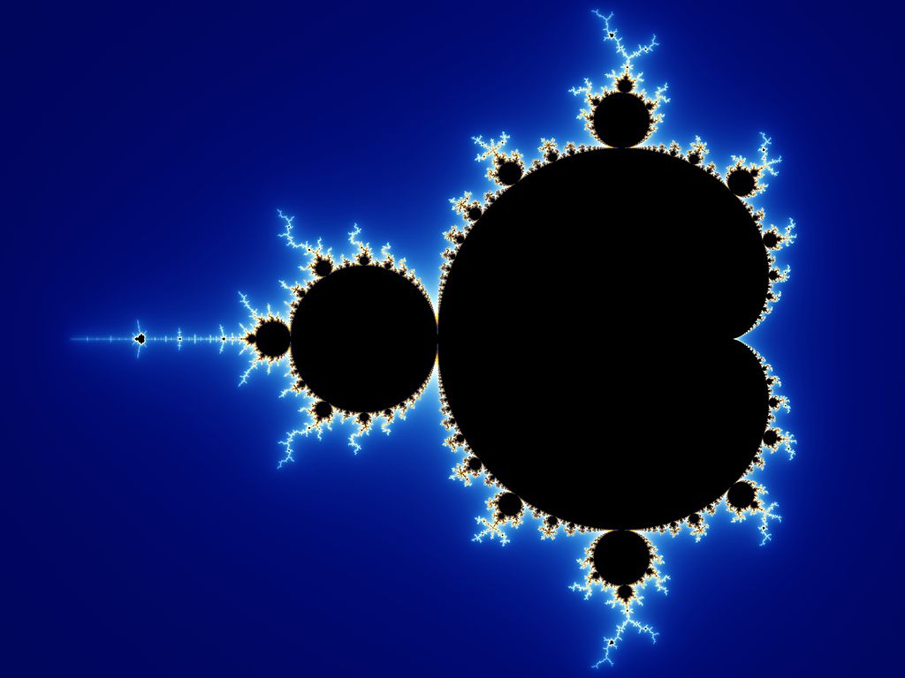
Contrairement aux ensembles de Julia, l'ensemble de Mandelbrot présente la propriété (ultime) d'auto-similarité. Il est alors possible de retrouver dans l'ensemble de Mandelbrot un version miniature mais strictement identique à l'ensemble global.
La construction de l'ensemble de Mandelbrot peut se généraliser en prenant comme suite support non plus $z^2 + c$ mais $z^d + c$ avec $d > 2$. Nous obtenons alors des "multibrot".
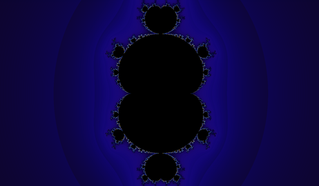 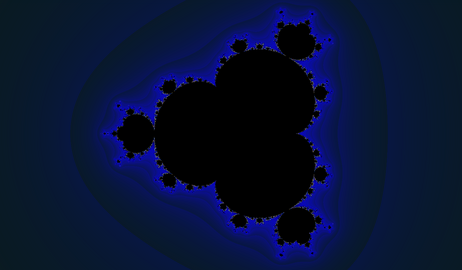 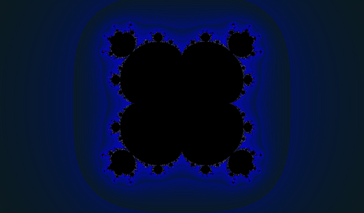 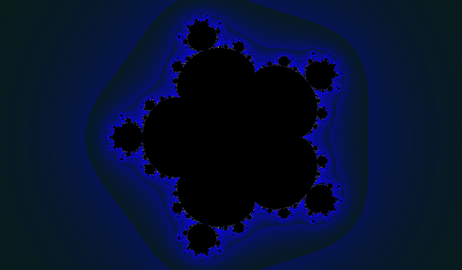
Voici quelques ressources pour approfondir le sujet.
Chacune d’entre elle est précédée d’un certain nombre d’étoiles suivant sa complexité, allant d’une étoile (*) pour les plus faciles à trois étoiles (***) pour les plus complexes :
Le symbole $\bigcap$ est l'équivalent du symbole $\sum$ pour l'intersection. Ainsi, $\bigcap_{i=1}^{+\infty} = C_1 \cap C_2 \cap C_3 \cap C_4 \ldots $ ↩
de sorte que $f(V_0) = V_1$, $f(V_1) = f^2(V_0) = V_2$ et, de manière générale $f^k(V_0) = V_k$ ↩
Il s'agit en réalité d'une partie d'un espace métrique. ↩
Benoît Mandelbrot a lui même écrit dans son ouvrage Fractales, hasard et finance "Il est vrai que [mes textes] avaient eu l'imprudence de proposer, pour le concept de fractale, une « définition pour voir », ou « définition tactique ». Ses défauts majeurs, vite apparus, me l'ont fait retirer dès le deuxième tirage." ↩